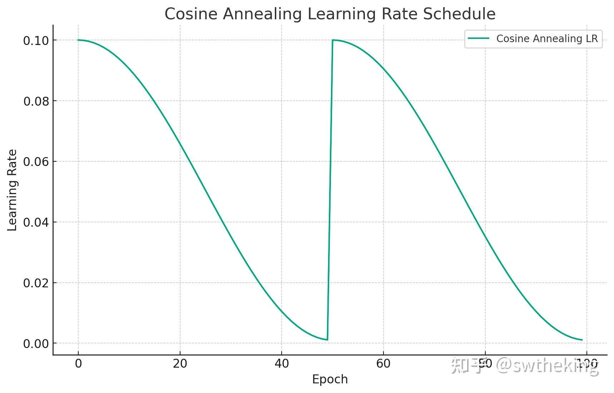
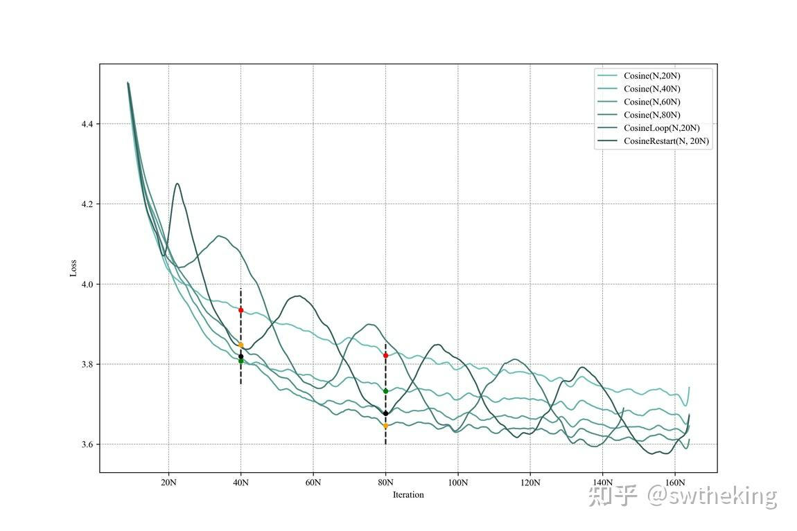

大模型面试题系列专栏-百面LLM&By&&swtheking
作者: swtheking
在一个LLM（Lamma2）对同一批prompt复制5次进行greedy预测的时候，为什么同一个prompt得到的answer会不一致？
因为同一个prompt和不同的prompt在一个batch里的时候，会有不一样的padding个数（这依赖一个batch里最长的prompt）。而由于padding数量不一致，所以其实原始prompt变成prompt + padding，所以原先两个prompt其实不能exactly一致。尽管Transformer中会对padding在attention中设置成一个极小值（-2^32 + 1），那么softmax(Q^TK)，padding前都为接近0的极小值。但由于大模型深度太深，这种累计的极小值在最后一层依然会放大占据一些weight，使得padding也会影响预测。
DPO的第0步loss是固定的么？如果固定，是多少？
是固定的，因为$\text{DPO loss} = -\log\sigma\left(\beta \left(\frac{p_{\theta}(y_{w}|x)}{p_{\text{ref}}(y_{w}|x)} - \frac{p_{\theta}(y_{l}|x)}{p_{\text{ref}}(y_{l}|x)}\right)\right)$
$\text{其中，} y_{w} \text{是正样本，} y_{l} \text{是负样本。}
\text{在开始时，由于优化的网络参数等于参考网络参数，因此}
p_{\theta}(y_{w}|x) = p_{\text{ref}}(y_{w}|x), \quad p_{\theta}(y_{l}|x) = p_{\text{ref}}(y_{l}|x)
\text{因此，损失函数变为}
-\log\sigma(\beta - \beta) = -\log\sigma(0)
\text{根据 sigmoid 函数的定义，} \sigma(0) = 0.5, \text{所以}
-\log(0.5) = 0.693$
如果做二分类的few shot任务，In Context Learning和Supervised Fine-tuning主要的区别是什么？
In Context Learning主要是将few shot数据加入Prompt中，然后让模型进行预测，不改变模型的参数。而Supervised Fine-tuning主要把few shot数据进行继续训练。在真实场景中，In Context Learning对label准确率要求较低，也就是label在出错的情况下，仍然可以凭借模型本身能力完成准确预测。而Supervised Fine-tuning对label准确率要求较高，因为改变了模型参数，因此label必须准确。具体细节可参考：
Notion – The all-in-one workspace for your notes, tasks, wikis, and databases.
什么是Cosine优化器？在大模型中应该怎么设置cosine优化器的周期比较好？
Cosine优化器是在lr_min 到 lr_max之间按pi * epoch / T_max周期变化的优化器。下面是用代码画的Cosine优化器变化的图：
import matplotlib.pyplot as plt
import numpy as np
# Parameters for the cosine annealing schedule
eta_min = 0.001 # Minimum learning rate
eta_max = 0.1 # Maximum learning rate
T_max = 50 # Number of epochs between two learning rate restarts
num_epochs = 100 # Total number of epochs
# Cosine Annealing Schedule
def cosine_annealing(epoch):
return eta_min + (eta_max - eta_min) * (1 + np.cos(np.pi * epoch / T_max)) / 2
# Generate learning rate for each epoch
lr_each_epoch = [cosine_annealing(epoch % T_max) for epoch in range(num_epochs)]
# Plotting
plt.figure(figsize=(10, 6))
plt.plot(lr_each_epoch, label='Cosine Annealing LR')
plt.xlabel('Epoch')
plt.ylabel('Learning Rate')
plt.title('Cosine Annealing Learning Rate Schedule')
plt.legend()
plt.grid(True)
plt.show()
图像为：

在大模型中，一般把T_max设置为最长epoch可以取得最大收益，具体可以参考：
Notion – The all-in-one workspace for your notes, tasks, wikis, and databases.
图像展示为：

根据模型设计不同cosine参数跑出的结果
当T_max = 80N时，在80N epoch可以达到最低点，但如果设置为T_max=20N，80Nepoch达不到最低点，可以看图上黄色点和黑色点在80N epoch的比较。